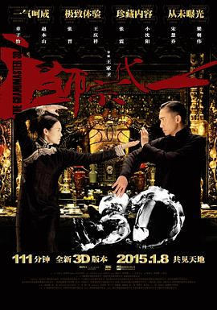

一代宗师 / 一代宗師
又名：一代宗师3D / 一代宗师终极版 / The Grandmaster
作品信息
| 导演 | 王家卫 |
| 编剧 | 邹静之 / 徐浩峰 / 王家卫 |
| 主演 | 梁朝伟 / 章子怡 / 张震 / 宋慧乔 / 赵本山 / 小沈阳 / 王庆祥 / 张晋 / 卢海鹏 / 冯克安 / 刘家勇 / 张智霖 / 金士杰 / 徐锦江 / 刘洵 / 尚铁龙 / 罗莽 / 吴廷烨 |
| 类型 | 剧情 / 动作 / 爱情 / 传记 |
| 制片国家/地区 | 中国大陆 / 中国香港 |
| 语言 | 汉语普通话 / 粤语 / 日语 |
| 上映日期 | 2013-01-08(中国大陆) / 2015-01-08(中国大陆 3D) / 2013-01-10(中国香港) / 2013-08-23(美国) |
| 片长 | 111分钟(3D重映) / 130分钟(中国大陆) / 108分钟(美国) / 123分钟(国际版) |
| IMDb | tt1462900 |
| 官方小站 | 一代宗师 |
最后一次看到是 2026-08-12T21:13:16+08:00 · 豆瓣原页